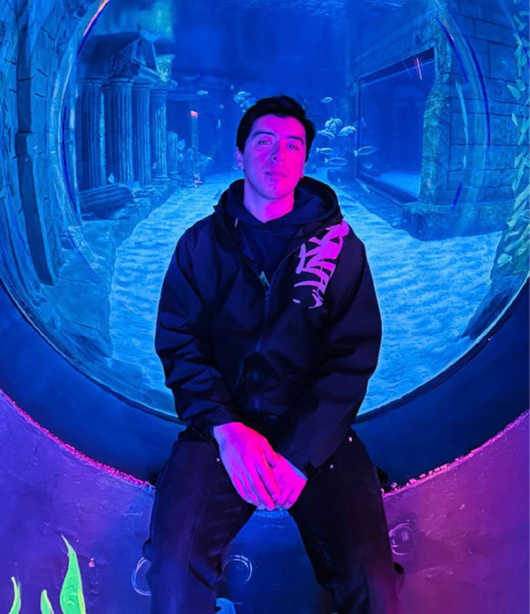

Maqsudjon Polatov
Engineer · Student · Producer
I'm Maqsudjon — a 21-year-old from Namangan, now in Tashkent. I work as a welder, study, and produce electronic music as Matsumi. I also build small things on the side — like pangea8.com, an IELTS practice hub. This site is where I share what I'm building and thinking about.
Updates
Short notes on what I'm building, learning, or thinking about.
Loading…
About
Where I'm from
I was born in Namangan in 2004. I went to vocational school №1 and studied to be an electrician — graduated with a red diploma. Later I worked as a welder. Engineering trained me to be precise.
What I do now
Today I live in Tashkent and work as a welder. I'm also a student, still learning. On the side I run pangea8.com — an IELTS practice hub I built with passion for students preparing for the test. Outside of all that, I make electronic music as Matsumi — UK Garage, Bassline, Hard Techno.
Languages & curiosity
I speak Uzbek, English (C1), and Korean (TOPIK Level 2). I'm curious about a lot of things and not sure yet where it all leads. This site is partly to keep track of the journey.